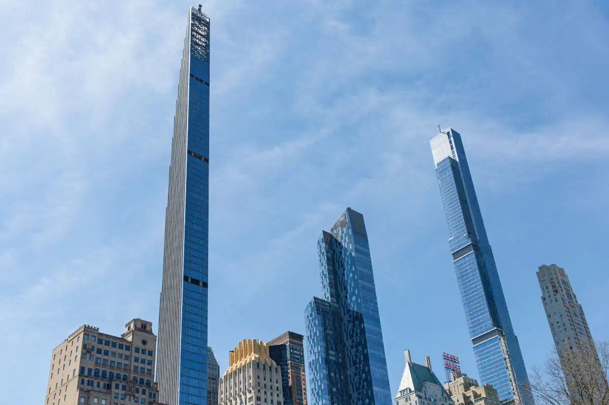
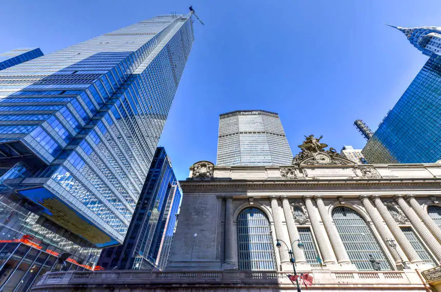
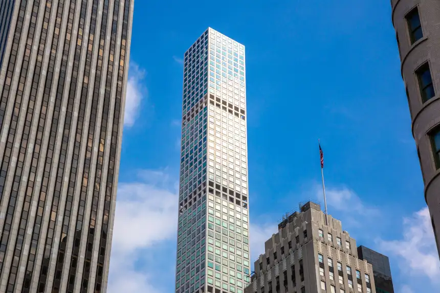

Datitos de New York

Midtown Manhattan con el Empire State Building (centro) y Lower Manhattan con One WTC al fondo
New York es la ciudad mas poblada de estados unidos y una de las mas pobladas e importantes del mundo. La ciudad también ha concentrado a muchos de los edificios más altos del mundo, entre los que se encuentran el edificio Empire State, el One World Trade Center, el edificio Chrysler, el 432 Park Avenue, la torre Trump, el edificio Seagram y anteriormente las torres gemelas del World Trade Center, que fueron derribadas en los atentados del 11 de septiembre de 2001
con respecto al mundo
Nueva York es un centro global de finanzas y comercio , cultura y tecnología , entretenimiento y medios de comunicación , producción académica y científica , y las artes y la moda , y, como sede de la sede de las Naciones Unidas , es un importante centro de diplomacia internacional .La ciudad de Nueva York es el centro de la principal economía metropolitana del mundo. Cuenta con impresionantes rascacielos como los que se pueden observar abajo
One World Trade Center
El One World Trade Center no solo es el edificio más alto de Nueva York, sino también del mundo occidental, además de ser el séptimo más alto del mundo.
Central Park Tower

La estructura rectilínea de Central Park Tower destaca en el skyline de la ciudad como uno de los edificios más altos de Nueva York. Este gigantesco rascacielos es el edificio residencial de mayor tamaño de la urbe.
Steinway Tower
Se trata de uno de los rascacielos de viviendas más estrechos del mundo. De hecho, su anchura solo permite una residencia por planta
One Vanderbilt
El One Vanderbilt es uno de los más jóvenes llegados al Midtown Manhattan y el cuarto de los edificios más altos de Nueva York.Es un ejemplo de modernidad y funcionalidad fusionados en un solo espacio.
432 Park Avenue
El diseño del 432 de Park Avenue, del arquitecto uruguayo Rafael Viñoly, se basa en la geometría del cuadrado, en conjunción con las cuadrículas de las avenidas de Manhattan.
30 Hudson Yards
también conocido como North Tower, se ubica en el West Side de Manhattan y forma parte de un proyecto de desarrollo urbanístico llevado a cabo en esta zona de Nueva York. .

Algunas atracciones turisticas
Estatua de la libertad

Central Park

Times Square